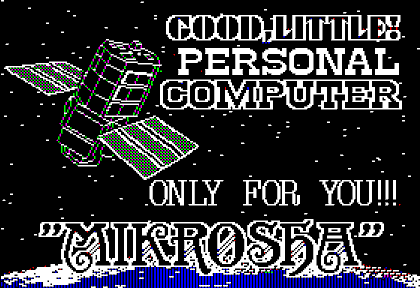

Достоверно неизвестно какое количество ПЭВМ Микроша было выпущено предприятием КБ Лианозово. Примерно оценить количество компьютеров можно из следующего текста:
----- 8< -----
Москва, Лианозовский электромеханический завод
САМЫЙ ДЕШЕВЫЙ СЕРИЙНЫЙ
БЫТОВОЙ КОМПЬЮТЕР
"МИКРОША"
Предназначен для пользователей не имеющих подготовки,для массового применения в системе первоначального
знакомства с компьютерной грамотностью в домашних условиях.
ТЕХНИЧЕСКИЕ ХАРАКТЕРИСТИКИ
ОЗУ 32 кбайт
ПЗУ 2 кбайт
ДЗУ магнитофон
ПСЕВДО-ГРАФИКА МОНОХРОМАТИЧЕСКАЯ 128 х 50 точек
ПЕЧАТЬ предусмотрено включение устройств CPA-80 и FX-85
ПРОГРАММНОЕ ОБЕСПЕЧЕНИЕ
СИСТЕМНОЕ ассемблер, бейсик
ПРИКЛАДНОЕ редактор текстов,обучающая программа 7 уроков бейсика,пакет программ по математике, пакет различных игр.
В 1987 году выпущено 3000 шт.
В 1988 году по плану будет выпущено 4000-5000 шт.
В настоящее время "МИКРОША" продается за наличный расчет в магазине "РАДИОТЕХНИКА" в МОСКВЕ.
ЦЕНА БЫТОВОГО КОМПЬЮТЕРА"МИКРОША" - 500 руб.
Бытовой компьютер "МИКРОША" использует в качестве монитора телевизор любой марки без какой-либо переделки.
----- 8< -----
Кстати, к этому рекламному тексту прилагалась картинка (непонятно на каком компьютере она была сделана):

Мы знаем, что на момент прекращения производства Микрош, эта ПЭВМ была очень востребована (из-за ее дешевизны), и по воспоминаниям работников, Микроши сразу "улетали" с производственного склада. Это значит, что темпы производства сохранялись до момента развала Советского Союза (декабрь 1991 г.). Однако некоторое количество Микрош, по всей видимости, производилось и в 1992 году. Так же есть информация, что Микроша в пике своей популярности производилась десятками тысяч в год.
Исходя из вышеуказанных данных, можно примерно расписать количество выпущенных экземпляров ПЭВМ Микроша по годам:
Итого, примерное количество выпущенных ПЭВМ Микроша составляет примерно 35000 (тридцать пять тысяч) экземпляров. Некоторые любители ретро-компьютеров называют цифру около 50000 (пятьдесят тысяч) экземпляров. Можно считать, что примерно в этих пределах и были выпущены в серию данные вычислительные устройства.